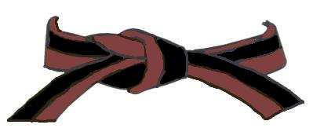

1º KYU
MARRONE NERA

KIHON:
- KIZAMI ZUKI – OI ZUKI [Mawatte]
- KIZAMI ZUKI – REN ZUKI [Mawatte]
- KIZAMI ZUKI – SANBON ZUKI [Mawatte]
- KIZAMI ZUKI – GYAKU ZUKI [Mawatte]
- AGE UKE – SOTO UKE – GEDAN BARAI – URAKEN – GYAKU ZUKI
- SOTO UKE – YOKO EMPI – URAKEN – GYAKU ZUKI
- SHUTO UKE
- SHUTO UKE – KIZAMI GERI – NUKITE
- SHUTO UKE – KIZAMI GERI – NUKITE – SHUTO UCHI – HAITO UCHI – AGE EMPI UCHI – GYAKU ZUKI [Mawatte]
- MAE GERI
- YOKO GERI
- MAWASHI GERI
- USHIRO GERI
- ARAI ASHI BARAI – GYAKU ZUKI
- SHIHO URAKEN
- SHIHO EMPI
- SHIHO GYAKU ZUKI
- SHIHO GEDAN BARAI SHUTO
- SHIHO GERI
- (Con partenza in H.D – c.g. – dx/sx: MAE, YOKO, USHIRO, MAWASHI)
KUMITE:
- JIYU IPPON KUMITE: JODAN – CHUDAN – MAE GERI – YOKO GERI – MAWASHI GERI
- JIYU KUMITE
KATA:
KANKU DAI – Un HEIAN a scelta della commissione tecnica
TEORIA:
Teoria relativa al grado e al periodo di pratica dell’atleta.
IL PROGRAMMA D’ESAME VA ALLENATO SIA A DESTRA CHE A SINISTRA
(Soprattutto per i bambini)